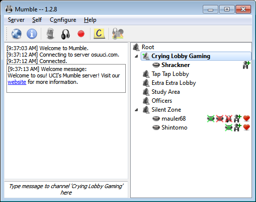
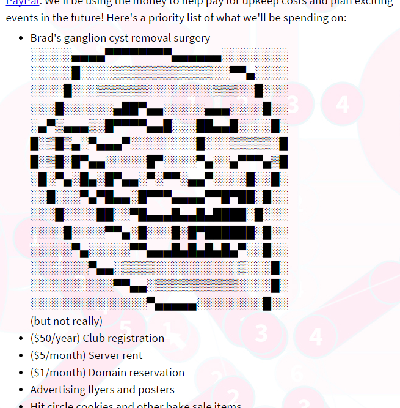

I'm Max. Some may know me as Wax Chug da Gwad. Welcome to my personal website, where I'll be experimenting with web programming, hosting my projects, and rambling about my interests.
5 Apr. 2015
Yeah so I basically spent the last couple of weeks knee deep in osu! UCI. Last quarter we found our bearings for the club. This quarter, we're going to try and improve heavily everywhere, from infrastructure to social media to outreach and advertising. Since I have a lot more technical knowledge than the other guys, I've been handling most of the tech that I can. For pretty much all of my break I've been making and maintaining a website for the club. It's up and running and relatively complete, but we still have a lot we'd like to add to it.
We want a database section to hold all our created beatmaps and compilations. We'll probably jam any photos and videos we have of the club in there as well. And we'd also like to have an events/calendar page with announcements probably similarly jammed in there somewhere as well. I don't know. We're still thinking and planning what we'd like.
Ironically, the hardest part about making the site wasn't anything code related, but actually setting up the background. To make the background, I made 16 osu!-like combos from scratch and then made overlapping tiles out of them. Quite tedious work that took a day by itself. But it looks good, I hope! It's also the background of this website right now, though greyed out.

The background!
I also set up a Mumble server (Murmur?) for the club, which my hope will be to replace our Skype group. It's a little bit more complicated and less popular than Skype, and it doesn't have chat history logs, but I think I prefer it overall. There's a lot more admin control, for making separate channels, restricting access, and other customizations. And for the typical user, it's easier to connect to than having to go through hoops adding people through Skype to get into the group.
Join us sometime! Login info: here
I spent a lot of time making the hit circle icons on the site, and then doing the administrative work of updating all the info on our like, what, half a dozen or so social media sites? Ugh, and we're probably going to want to add a few more in the future too, with maybe a Youtube account for vlogs, and I don't know, a plug.dj and who knows what else.
There's a lot in general we're probably going to want to do in the future. Advertising with flyers, which are probably going to go up very soon, probably by next week. We want to do a barbecue with our members sometime, though I'm a bit worried of costs and stuff since we haven't made any money yet. I'll be setting up a PayPal account in the near future to hopefully receive donations here and there. We're looking into merchandise to sell, probably a small charm this time with our logo. And we're looking to outreach to reddit and other people. A lot of stuff to keep track of!!
Brad please don't die
I'm really thankful for the officer team for putting in a lot of their time into the club. They picked up a lot of the slack and tasks that I'd rather not deal with haha. In particular, Jimmy's been handling the Twitch setup and is planning our outreach and activities at the moment, so I'll have to thank him much for that. Justin and Brad don't have as much experience as the other two of us in technical knowledge or administration. But they're freshman afterall, so I won't put any blame necessarily on them. If anything, I think of them as the interns of our little group, and they're learning overtime how to manage and build club for the future.
That said though, they're definitely more knowledgeable about osu! itself than I am. They'll probably be responsible for being beatmap editor mentors and handling the final beatmap compilation at the end of the quarter. They'll also handle odd tasks here and there, though I'll probably quality check everything or touch up what they've done if I have to.
At the end of the day, this group as a whole is awesome to work with. We're all really, just, chill I guess is the right term, and just fun to hang around as a group of friends. None of us have been really picky or stubborn to deal with, and I think it's always been productive when we hold discussions and bring up new ideas. I think everyone's really motivated and dedicated to do their best for both the club and the game, and gung ho-ness is contagious.
I'll finish off with a few pieces of musics that I've been recently listening to. I haven't been listening to much and looking for much at my own admission, busy with other things and content with whatever I have at the moment. There have been a couple pretty big utaite albums to be released, by Majico and Itou Kashitarou, that I haven't picked up, but that I have songs from. I've been also playing and listening to odd songs from osu! here and there. First one I'll start with is a Majico song released recently by buzzG. Love the guitar solo at the end:
Majico album XFD, a lot of good and original songs
Next is another recent song. This is a new MikitoP(!!) song made for Itou Kashitarou's upcoming album. I don't know. I can't help but love MikitoP songs. I'm not really a huge fan of Kashitarou, so I may try and look for a different cover of the song, but I'm content with this version for now.
"Bokuno Hosomichi" - MikitoP ft. Itou Kashitarou
Itou Kashitarou album XFD, a lot of MikitoP songs!
And last is an old song I randomly stumbled upon. The first version I heard of this song was by Natsushiro Takaaki, but haha I don't really like him that much either. Then I somehow stumbled a cover by Limit that I fell in love with.
"She" - buzzG ft. Limit(Suya)
Other than that, it's just been a bit of osu! here and there. I haven't been playing too much since I've been working on the site, but biweekly sessions will get me back in the groove I'm sure. Here's a song I played like a million times to full clear... only to realize that my one of my not full cleared scores beat me... Sad day, but it's a great song nonetheless.
"Dream Walker" - Taishi ft. Rita
That's it! See you guys!